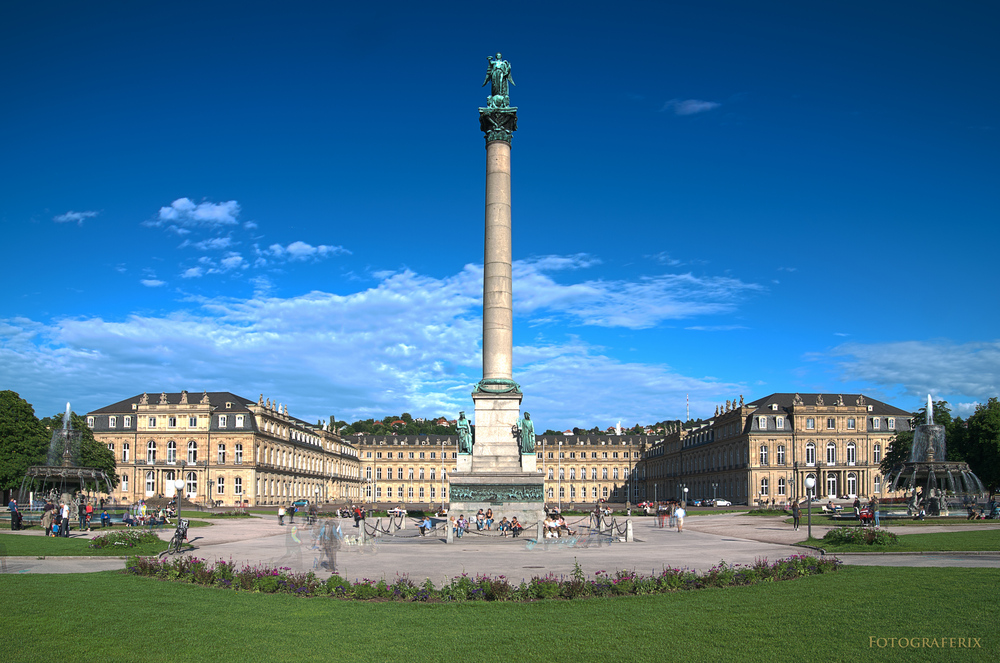
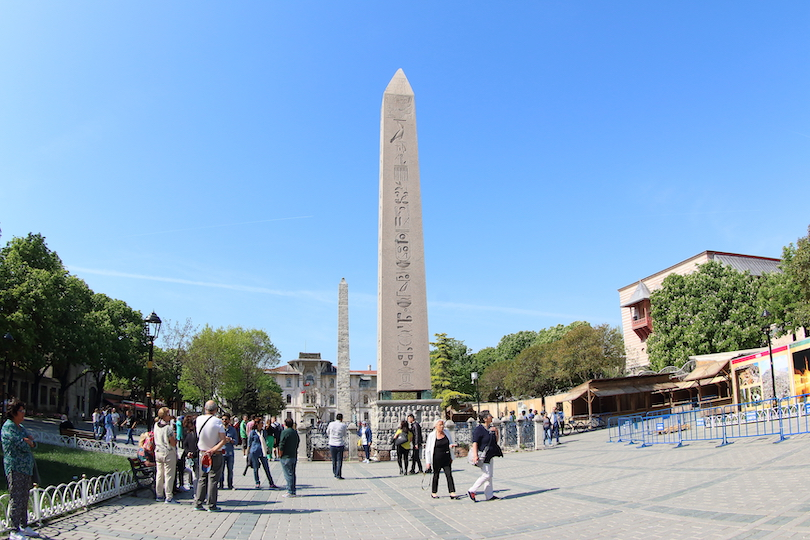

Schlossplatz is one of the first and most beautiful places I've visited in Stuttgart.
It's the largest square in Stuttgart Mitte and home to the Neues Schloss which was built between
1746 and 1807.
From its construction until the mid-1800s it was used as a military parade ground
and not open to general public use. It stands next to two other popular squares in Stuttgart:
Karlsplatz to the south and Schillerplatz to the south west. The Königstraße (King Street) bisects
the plaza from north to south.

When visiting Istanbul, the Hippodrome is one of the places that caught my eye. It used to host dramatic
chariot races, gladiator fights, and even political debates. While not much of it remains, the square is
pleasant to stroll around with some amazing ancient monuments and statues still on show.
For centuries, the Hippodrome lay at the center of life in the city and was decadently decorated with
statues of emperors and gods, animals, and heroes. It never really recovered though from the sacking of
Constantinople in 1204 when much of its stone was carted off.
Maybe one of the most popular places in Istanbul is the Grand Bazaar. It has 5,000 shops making it one of
the largest indoor marketplaces in the world. Receiving more than a quarter-million visitors a day, the
bazaar features such items as jewelry, carpets that may or may not fly, spices, antiques and hand-painted
ceramics.
The bazaar dates back to 1461 and today is home to two mosques, four fountains, two hammams or
steam baths, and the Cevahir Bedesten, where the rarest and most valuable items have been found traditionally.
Here is where shoppers will find old coins, jewelry with precious gems, inlaid weapons and antique furniture.